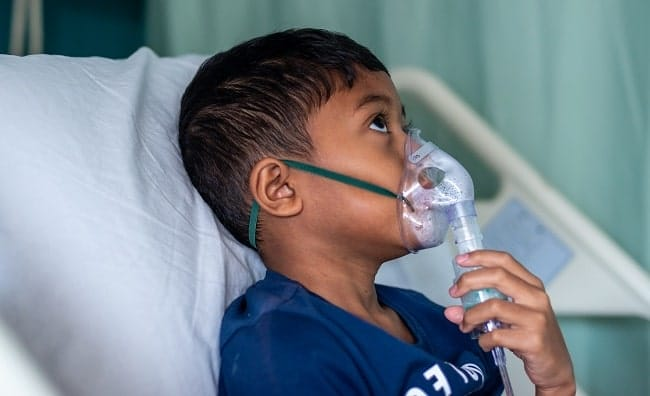
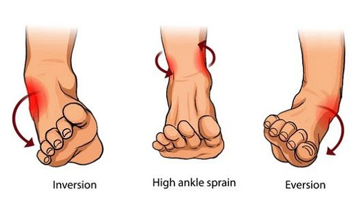
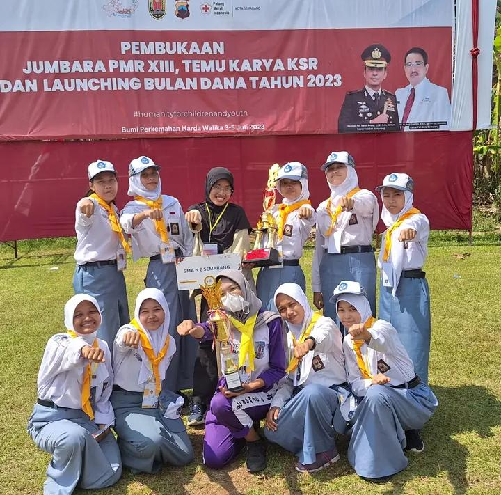

Akses cepat panduan P3K harian, emergency call, cek ketersediaan obat UKS secara real-time, dan hitung indeks massa tubuh (BMI) dalam satu platform terpercaya.
Menerapkan digitalisasi dalam kehidupan sehari-hari sekolah untuk menghadirkan akses layanan UKS, edukasi medis, dan pemantauan kesehatan yang lebih cepat, transparan, serta terintegrasi bagi seluruh warga SMANDA.
Langkah cepat dan tepat yang bisa kamu lakukan sebelum korban mendapatkan penanganan lebih lanjut di UKS.




Pantau ketersediaan obat-obatan, perban, dan antiseptik UKN secara transparan dan berkala.
| Nama Obat / Logistik | Kategori | Khasiat / Kegunaan | Sisa Stok | Status |
|---|---|---|---|---|
| Memuat data stok dari Google Sheets... | ||||
Data diperbarui rutin oleh Pengurus Divisi UKS PMR.
Hitung indeks massa tubuh untuk memantau berat badan ideal dan status nutrisi tubuhmu.
Rekam jejak kebersamaan, dedikasi, serta berbagai aktivitas pelatihan dan aksi kemanusiaan relawan PMR.
 Sosial
Sosial
Bentuk kepedulian sosial relawan PMR dengan menyalurkan bantuan dan berbagi berkah kepada sesama.

JumbaraAjang temu, uji ketangkasan, dan kebersamaan relawan PMR tingkat kota dalam suasana gembira.
 Latihan
Latihan
Pembinaan fisik, stamina, dan daya tahan tubuh di lapangan guna menunjang kesiapsiagaan tugas pertolongan.
 Latgab
Latgab
Simulasi tindakan darurat terpadu bersama PMR sekolah lain untuk mempererat sinergi kerelawanan.
 Kesehatan
Kesehatan
Edukasi Pertolongan Pertama Layanan Psikologis serta pemeriksaan kesehatan mental bagi warga sekolah.
 Pelantikan
Pelantikan
Pemberian slayer resmi sebagai simbol pengukuhan komitmen dan kesiapan moral anggota baru PMR.
 Pelantikan
Pelantikan
Penyematan topi lapangan resmi sebagai kelengkapan atribut siaga operasional relawan di sekolah.
 Pelatihan
Pelatihan
Peningkatan kapasitas dan keterampilan kader UKS melalui workshop kesehatan terpadu bersama tim medis UNIMUS.
 Riset
Riset
Partisipasi dalam edukasi dan penelitian pencegahan kanker serviks bersama akademisi Fakultas Kedokteran UNDIP.
 Forum
Forum
Forum musyawarah, koordinasi program kerja, dan temu jejaring relawan PMR se-Kota Semarang.